Indicação
Reconstrução
Placas TriLock, anatômicas
Espessura 1,5 mm — semi-rígido
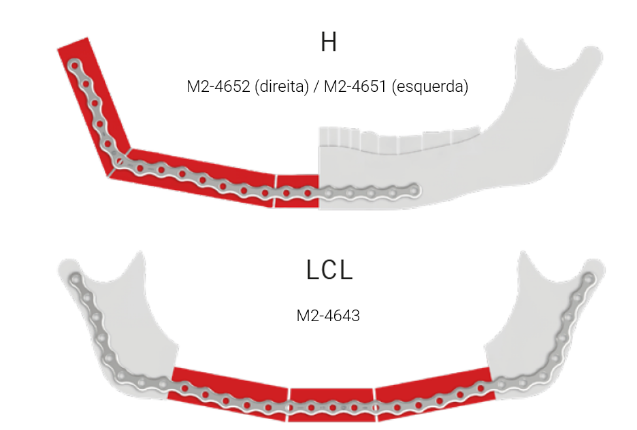
MODUS 2 — Mandible / Reconstrução
26
Indicação
Reconstrução — grade e placas retas
Placas TriLock, grade
1,3 mm — semi-rígido
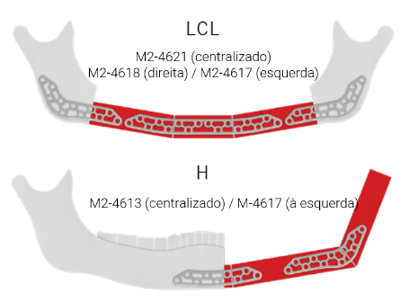
Placas da mandíbula, retas
1,0 mm — rígido
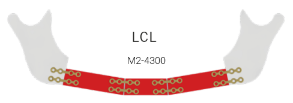
MODUS 2 — Mandible / Reconstrução
27
Indicação
Ponte de um defeito ósseo
Placas da ponte TriLock
Espessura 2,0 mm — semi-rígido
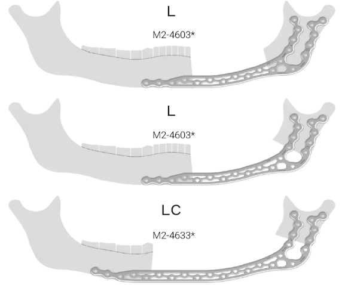
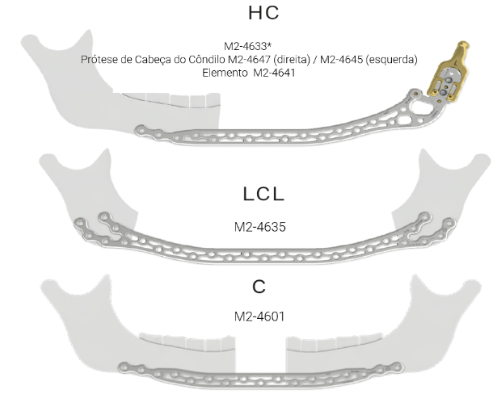
MODUS 2 — Mandible / Ponte óssea
28
Placas da ponte TriLock
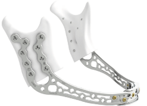
Defeitos centrais e duplamente laterais
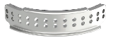
Defeitos laterais / hemimandibulares
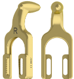
Prótese temporomandibular temporária com elemento transportador
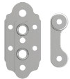
Adaptador C para placas de ponte
MODUS 2 — Mandible / Placas da ponte
29
Portfólio de placas de mandíbula
Cinco famílias cobrem a mandíbula inteira — do côndilo à grade de compressão.
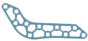
Placas de côndilo TriLock
TriLock, anatômicas
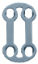
Ângulo de mandíbula TriLock
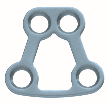
Placas de grade TriLock
Placas retas
MODUS 2 — Mandible / Portfólio
30
Características da placa
⎼Furos TriLock em ambos os lados*
⎼Ajuste anatômico
⎼Adaptável na região do ramo
⎼Estrutura em grade
*Comparado a placas com furos TriLock em um só lado.
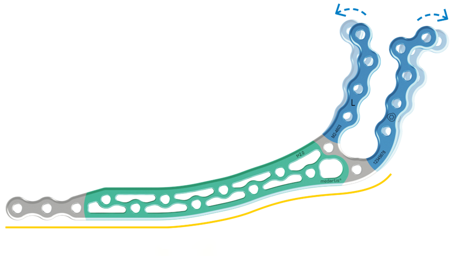
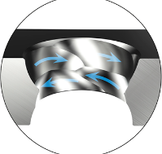
MODUS 2 — Mandible / Características
31
Mais estável, com perfil menor
Teste cíclico com força crescente até a falha. Novas placas de ponte comparadas ao MODUS 2.5 Reco.
MODUS 2.5 Reco
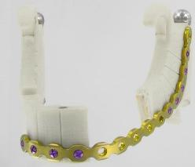
128.589
ciclos
323 N
F máx.
Nova placa de ponte MODUS 2
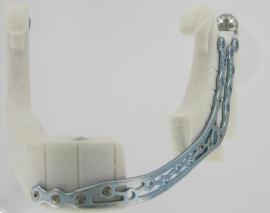
176.407
ciclos
649 N
F máx.
Melhor resistência à fadiga com perfil de placa menor. E mais fácil de moldar.
MODUS 2 — Mandible / Estabilidade
32
Placas de ponte TriLock: características e benefícios
CaracterísticasBenefícios
1TriLock em ambos os ladosMenos dobramento da placa*
2Ajuste anatômicoMenos dobramento da placa*
3Seção do ramo adaptávelMenos dobramento da placa*
4Estrutura em gradeMenos tensão que a placa convencional; mais estabilidade apesar do perfil mais baixo*
*Comparado à placa de reconstrução convencional.
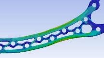
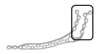
MODUS 2 — Mandible / Placas de ponte
33
Placas condilares: com e sem bloqueio
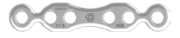
Bloqueada
Estabilidade angular pelo furo TriLock
Sem bloqueio
Compressão convencional da placa contra o osso
MODUS 2 — Mandible / Placas condilares
34
Visão geral dos parafusos — Mandible
Interface HexaDrive 6 em toda a linha. Corticais, SpeedTip e TriLock.
ParafusoDiâmetroInterface
Parafuso Cortical 2.0Ø 2,0 mmHexaDrive 6
Parafuso Cortical 2.3Ø 2,3 mmHexaDrive 6
Parafuso SpeedTip 2.0Ø 2,0 mmHexaDrive 6
Parafuso TriLock 2.0Ø 2,0 mmHexaDrive 6
Parafuso TriLock 2.3Ø 2,3 mmHexaDrive 6
Parafuso TriLock 2.5Ø 2,5 mmHexaDrive 6
Parafuso TriLock SpeedTip 2.0Ø 2,0 mmHexaDrive 6
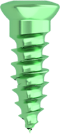
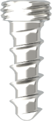
MODUS 2 — Mandible / Parafusos
35
Três tecnologias
em um parafuso
⎼TriLock — bloqueio angular ± 15°
⎼SpeedTip — corte imediato do osso
⎼HexaDrive — auto-fixação e mais torque
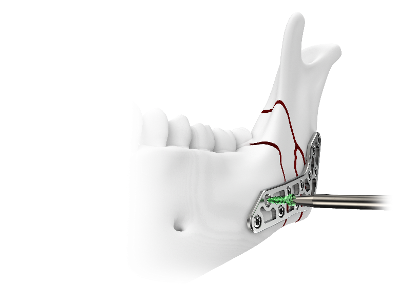
36